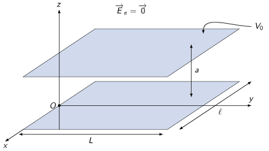
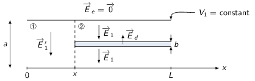

TD3 : Les milieux diélectriques
1 Introduction
Historiquement, la découverte expérimentale des diélectriques est à mettre au profit de Michael Faraday qui nota que l'introduction d'un isolant entre les armatures d'un condensateur modifiait sa capacité.
On exprime la polarisation \(\vv{P}\) d'un matériau comme la densité volumique de moment dipolaire \(\vv{p}\) soit \(\vv{P}=\frac{\d\vv{p}}{\d\tau}\). En calculant le potentiel électrique à partir d'une distribution de moment dipolaire, on déduit que la densité volumique de charge liées ou polarisées \(\rho_P\) est égale à la divergence du vecteur polarisation : \(\rho_P=-\div\vv{P}\). De même, la densité surfacique de charges liées est égale à \(\sigma_P=\vv{P}.\vv{n}\). L'équation de Maxwell-Gauss devient
\begin{align*} \div\vv{E}&=\frac{\rho_\text{libre}+\rho_\text{liée}}{\epsilon_0}=\frac{\rho_\text{libre}-\div\vv{P}}{\epsilon_0} \end{align*}En posant le vecteur \(\vv{D}=\epsilon_0\vv{E}+\vv{P}\), on obtient l'équation locale suivante
\begin{align*} \div\vv{D}=\rho_\text{libre}\rightarrow\varoiint_S\vv{D}.\,\d\vv{S}=\Upsigma Q_\text{libre} \end{align*}Dans le cas particulier d'un milieu Linéaire, Homogène et Isotrope (LHI), la polarisation est égale à \(\vv{P}=\epsilon_0\,\chi_e\vv{E}\) où \(\chi_e\) est un nombre positif, sans dimension, appelé la susceptibilité diélectrique. Dans ce cas, le vecteur \(\vv{D}\) devient
\begin{align*} \vv{D}=\epsilon_0\vv{E}\underbrace{(1+\chi_e)}_{\epsilon_r}=\epsilon\vv{E} \end{align*}où \(\epsilon\) et \(\epsilon_r\) sont appellés respectivement la permitivité absolue et la permitivité relative du diélectrique.
2 Charge ponctuelle au centre d'une boule diélectrique
Une charge ponctuelle est plaçée au centre d'une cavité sphérique de rayon \(r_1\) creusée dans une boule diélectrique l.h.i. de rayon externe \(r_2\) et de permittivité relative \(\epsilon_r\). Calculer le champ électrostatique \(\vv{E}\) en tout point, le vecteur polarisation \(\vv{P}\) et les densités de charges équivalentes. Que se passe-t-il si \(r_1\to0\) ?
Le problème est à géométrie sphérique et les champs \(\vv{E},\vv{D}\) et \(\vv{P}\) sont donc radiaux et ne dépendent que de \(r\). On peut donc appliquer le théorème de Gauss généralisé aux milieux diélectriques en considérant une surface de Gauss sphérique de rayon \(r\). On distingue alors trois régions
\(0
\(r_1
- \(r>r_2\) : le problème est identique à la région \(0
Le vecteur polarisation étant nul hors de milieux diélectriques, son expression à l'intérieur du l.h.i s'écrit
\begin{align*} \vv{P}&=\chi_e\epsilon_0\vv{E}=\frac{q}{4\pi\epsilon_r}\,\frac{\chi_e}{r^2}\vv{u}_r\\ &=\frac{q}{4\pi}\,\frac{\chi_e}{1+\chi_e}\,\frac{1}{r^2}\vv{u}_r \end{align*}La densité volumique de charges libres est \(\rho_\ell=+q\delta(\vv{r})\) tandis que la densité volumique de charges liées devient
\begin{align*} \rho_P&=-\div\vv{P}=-\chi_e\epsilon_0\div\vv{E}\\ &=-\chi_e\epsilon_0\times\frac{q}{4\pi\epsilon_0\epsilon_r}\,\frac{\partial}{\partial r}\left(r^2\frac{1}{r^2}\right)=0 \end{align*}confirmant le fait que \(\rho_P\) soit nul dans un l.h.i si \(\rho_\ell\) est également nul dans ce matériau.
Aux deux interfaces \(r=r_1\) et \(r=r_2\), la discontinuité du vecteur \(\vv{P}\) implique
\begin{align*} \sigma_P(r=r_1)&=-\vv{u}_r.\left(\vv{P}(r=r_1)-\cancel{\vv{P}_\text{vide}}\right)=-\frac{q}{4\pi r_1^2}\,\frac{\chi_e}{1+\chi_e}\\ \sigma_P(r=r_2)&=-\vv{u}_r.\left(\cancel{\vv{P}_\text{vide}}-\vv{P}(r=r_2)\right)=+\frac{q}{4\pi r_2^2}\,\frac{\chi_e}{1+\chi_e} \end{align*}Les densités surfaciques de charges libres \(\sigma_\ell(r=r_1)\) et \(\sigma_\ell(r=r_2)\) sont égales respectivement à \(\sigma_P(r=r_1)\) et \(\sigma_P(r=r_2)\). Ce résultat peut se démontrer à l'aide de la discontinuité de la composante normale du vecteur \(\vv{D}\).
Si \(r_1\to0\), toute la densité surfacique de charge en \(r=r_1\) se retrouve alors localisée en \(r=0\) sous la forme d'une charge ponctuelle polarisée pendant de la charge libre \(+q\).
3 Boule uniformément polarisée
On considère une boule uniformément polarisée de rayon \(R\).
- Montrer que le potentiel peut-être déterminé en tout point de l'espace en résolvant l'équation de Laplace.
La polarisation est uniforme \(\vv{P}=P\vv{u}_z\) 1, il n'y a donc pas de charge volumique liée \(\rho_P=-\div\vv{P}=0\). Il n'y a pas de charge libre d'où \(\rho=\rho_P+\rho_L=0\). L'équation de Poisson \(\Delta V=-\frac{\rho}{\epsilon_0}=0\) devient une équation de Laplace.
l'invariance du problème permet de poser \(\vv{P}=P\vv{u}_z\) car on pourra toujours pivoter/tourner le système de coordonnées sphériques de telle sorte à ce que \(\vv{P}\) soit colinéaire à \(Oz\).
Résoudre l'équation de Laplace en cherchant le potentiel sous la forme \(V(r,\theta)=f(r)\cos\theta\) où \(f\) est une fonction de la forme :
\begin{align*} f(r)=\sum_{n=-\infty}^{+\infty}a_nr^n \end{align*}dont on déterminera les coefficients \(a_n\) non nuls.
L'invariance du problème par rotation d'angle \(\phi\) implique que le potentiel \(V\) ne dépende pas de cette coordonnée. En posant \(V(r,\theta)=f(r)\,\cos\theta\) avec \(f(r)=\Sigma_{-\infty}^{+\infty}a_nr^n\). Le lapacien en coordonnées sphériques s'écrit
\begin{align*} \Delta V(r,\theta)&=\frac{1}{r}\frac{\partial^2}{\partial r^2}\left(rV(r,\theta)\right)+\frac{1}{r^2\sin\theta}\frac{\partial}{\partial\theta}\left(\sin\theta\frac{\partial V}{\partial\theta}\right) \end{align*}soit
\begin{align*} \frac{\partial^2}{\partial r^2}\left(rV(r,\theta)\right)&=\cos\theta\times\sum_{-\infty}^{+\infty}a_n\times n(n+1)r^{n-1}\\ \frac{\partial}{\partial\theta}\left(\sin\theta\frac{\partial V(r,\theta)}{\partial\theta}\right)&=\cos\theta\frac{\partial V}{\partial\theta}+\sin\theta\frac{\partial^2V}{\partial\theta^2}\\ &=\Sigma_{-\infty}^{+\infty}a_nr^n\times\left(-\cos\theta\sin\theta-\sin\theta\cos\theta\right)\\ &=-2\cos\theta\sin\theta\times\Sigma_{-\infty}^{+\infty}a_nr^n \end{align*}L'équation de Laplace devient
\begin{align*} \Delta V=0&=\cos\theta\times\Sigma_{-\infty}^{+\infty}a_n\times n(n+1)r^{n-2}-2\cos\theta\times\Sigma_{-\infty}^{+\infty}a_nr^{n-2}\\ 0&=n(n+1)-2\\ 0&=(n+2)(n-1) \end{align*}Les seuls coefficients non nuls sont donc \(a_{-2}\) et \(a_1\). Le potentiel \(V\) en tout point de l'espace s'écrit
\begin{align*} V(r,\theta)=\left(\frac{a_{-2}}{r^2}+a_1r\right)\cos\theta \end{align*}- Déterminer les potentiels \(V_i\) et \(V_e\) à l'intérieur et à l'extérieur de la sphère, ainsi que les champs \(\vv{E}_i\) et \(\vv{E}_e\) correspondants. Commenter.
Les potentiels \(V_i\) et \(V_e\) ne doivent pas diverger (équivalent à dire qu'ils doivent rester finis) d'où lorsque \(r\to0\), \(V_i\) fini impose que \(a_{-2}\) soit nul. De même, lorsque \(r\to\infty\), \(V_e\) reste fini et donc \(a_1=0\)
\begin{align*} V_i(r,\theta)&=a_1r\cos\theta\\ V_e(r,\theta)&=\frac{a_{-2}\cos\theta}{r^2} \end{align*}Par ailleurs, la continuité du potentiel en \(r=R\) conduit à
\begin{align*} V_i(R,\theta)&=V_e(R,\theta)\\ a_1R\cancel{\cos\theta}&=\frac{a_{-2}\cancel{\cos\theta}}{R^2}\\ a_1&=\frac{a_{-2}}{R^3} \end{align*}On utilise finalement la discontinuité de la composante normale du vecteur \(\vv{D}\) à l'interface diélectrique-vide
\begin{align*} \left(\vv{D}_ e(R,\theta)-\vv{D}_i(R,\theta)\right).\vv{u}_r&=\sigma_\text{libre}=0\\ &\text{avec }\vv{D}=\epsilon_0\vv{E}+\vv{P}\\ \left(\epsilon_0\vv{E}_e+\cancel{\vv{P}_e}-\epsilon_0\vv{E}_i-\vv{P}_i\right).\vv{u}_r&=0\\ \epsilon_0\left(\vv{E}_e-\vv{E}_i\right).\vv{u}_r&=\vv{P}.\vv{u}_r=P\cos\theta \end{align*}Les champs électriques \(\vv{E}_e\) et \(\vv{E}_i\) sont respectivement égaux à
\begin{align*} \vv{E}_e&=-\grad V_e=-\grad\left(\frac{a_{-2}\cos\theta}{r^2}\right)\\ &=-\frac{\partial V_e}{\partial r}\vv{u}_r-\frac{1}{r}\frac{\partial V_e}{\partial\theta}\vv{u}_\theta\\ &=a_{-2}\cos\theta\times\frac{2}{r^3}\vv{u}_r+\frac{1}{r^3}a_{-2}\sin\theta\vv{u}_\theta\\ \vv{E}_i&=-\grad V_i=-\grad\left(a_1r\cos\theta\right)\\ &=-a_1\cos\theta\vv{u}_r+a_1\sin\theta\vv{u}_\theta \end{align*}La relation de passage projeté selon \(\vv{u}_r\) devient
\begin{align*} \frac{2a_{-2}}{R^3}\cancel{\cos\theta}+a_1\cancel{\cos\theta}&=\frac{P\cancel{\cos\theta}}{\epsilon_0}\\ \frac{2a_{-2}}{R^3}+\frac{a_{-2}}{R^3}&=\frac{P}{\epsilon_0}\\ a_{-2}&=\frac{PR^3}{3\epsilon_0}\text{ et }a_1=\frac{P}{3\epsilon_0} \end{align*}d'où
\begin{align*} V_e(r,\theta)&=\frac{PR^3}{3\epsilon_0}\frac{\cos\theta}{r^2}\\ V_i(r,\theta)&=\frac{P}{3\epsilon_0}\,r\cos\theta\\ \vv{E}_e(r,\theta)&=\frac{PR^3}{3\epsilon_0r^3}\left(2\cos\theta\vv{u}_r+\sin\theta\vv{u}_\theta\right)\\ \vv{E}_i(r,\theta)&=-\frac{P}{3\epsilon_0}\left(\underbrace{\cos\theta\vv{u}_r-\sin\theta\vv{u}_\theta}_{\vv{u}_z}\right)\\ &=-\frac{\vv{P}}{3\epsilon_0}=\text{champ dépolarisant} \end{align*}Le champ électrique extérieur s'apparente au champ électrique crée par un dipôle ponctuel \(\vv{p}\) placé à l'origine avec \(\vv{p}=\frac{4}{3}\pi R^3\vv{P}\). Pour rappel, le champ électrique crée par un dipôle est
\begin{align*} \vv{E}\simeq\frac{1}{4\pi\epsilon_0}\,\frac{3(\vv{p}.\vv{u}_r)\vv{u}_r-\vv{p}}{r^3} \end{align*}Or l'expression
\begin{align*} 2\cos\theta\vv{u}_r+\sin\theta\vv{u}_\theta=3\cos\theta\vv{u}_r-\vv{u}_z \end{align*}car \(\vv{u}_z=\cos\theta\vv{u}_r-\sin\theta\vv{u}_\theta\). Sachant que \(\vv{P}.\vv{u}_r=P\cos\theta\) on obtient
\begin{align*} \vv{E}_e=\frac{R^3}{3\epsilon_0}\,\frac{3\left(\vv{P}.\vv{u}_r\right).\vv{u}_r-\vv{P}}{r^3} \end{align*}d'où \(\vv{p}=\frac{4}{3}\pi R^3\vv{P}\), on retrouve donc bien \(\vv{P}=\frac{\d\vv{p}}{\d\tau}\).
4 Plaque diélectrique
4.1 Le condensateur plan

Un condensateur plan rectangulaire de dimension \(\ell\times L\), d'épaisseur \(a\ll\ell\) ou \(L\), est relié aux bornes d'un générateur qui délivre une tension constante \(V_0\). Pour les symétries et invariances, on considère que les armatures sont des plaques conductrices infinies, perpendiculaires à \(Oz\). L'espace entre les armatures est vide. On suppose que le champ électrique est nul à l'extérieur du condensateur. Étudier la répartition des charges. Retrouver les expressions de la charge \(Q_0\) d'une armature, de la capacité \(C_0\) et de l'énergie stockée \(U_0\).
Symétries & invariances de la distribution de charges
- tout plan contenant l'axe \(Oz\) est plan de symétrie d'où \(\vv{E}\parallel\vv{u}_z\)
- invariance par translation selon \(Ox\) et \(Oy\) d'où \(E=f(\cancel{x},\cancel{y},z)\)
L'orientation du champ électrique \(\vv{E}=E(z)\vv{u}_z\) permet la définition d'une surface fermée de forme cylindrique à l'intérieur du condensateur. Le théorème de Gauss implique
\begin{align*} \varoiint_S\vv{E}.\vv{\d S}=\frac{\Upsigma Q_\text{int.}}{\epsilon_0}&=0\text{ (pas de charge à l'intérieur du condensateur)}\\ E(z_1)S - E(z_2)S&=0\rightarrow E(z_1)=E(z_2)=E_0\\ \vv{E}=E_0\vv{u}_z&=-\grad V=-\frac{\d V}{\d z}\vv{u}_z\\ \int_0^aE_0\d z&=-\int_0^{V_0}\d V\rightarrow E_0a=-V_0 \end{align*}Répartition des charges
en \(z=0\)
\begin{align*} \left(\vv{E}_e-\vv{E}_i\right).(-)\vv{u}_z&=\frac{\sigma_S}{\epsilon_0}\\ E_0&=\frac{\sigma_S}{\epsilon_0}\rightarrow Q_0=\sigma_S\times\ell\times L=-\frac{V_0\epsilon_0}{a}\ell\times L \end{align*}en \(z=a\)
\begin{align*} \left(\vv{E}_e-\vv{E}_i\right).\vv{u}_z&=\frac{\sigma_S}{\epsilon_0}\\ -E_0&=\frac{\sigma_S}{\epsilon_0}\rightarrow Q_a=-\sigma_S\times\ell\times L=\frac{V_0\epsilon_0}{a}\ell\times L=-Q_0 \end{align*}
Capacité du condensateur
\begin{align*} Q_0=C_0V_0\rightarrow C_0=\frac{\epsilon_0\ell\times L}{a}>0 \end{align*}Énergie stockée dans le condensateur
\begin{align*} U_0=\frac{1}{2}C_0V_0^2&\rightarrow U_0=\frac{\epsilon_0\ell\times L}{2a}V_0^2\\ u_\text{em}=\frac{\epsilon_0E^2}{2}&\rightarrow U=\int u_\text{em}\,\d\tau=\frac{\epsilon_0\ell\times L}{2a}V_0^2=U_0 \end{align*}L'énergie stockée dans le condensateur est bien d'origine électrostatique.
4.2 Plaque diélectrique infinie
- Une surface élémentaire \(\d S\) de normale \(\vv{n}\) porte une densité surfacique de dipôles \(\vv{P}_S=P_S\vv{n}\). Exprimer le potentiel électrique \(\d V(M)\) créé au point \(M\) en fonction de l'angle solide algébrique \(\d\Omega\) de la surface vue du point \(M\) (à l'infini le potentiel est nul). En déduire le potentiel crée par un plan infini de normale \(\vv{n}\) en tout point de l'espace, portant une densité surfacique de dipôles uniforme colinéaire à \(\vv{n}\). Calculer le champ électrique \(\vv{E}(M)\) en tout point.
Potentiel crée par un dipôle \(\d\vv{p}\)
\begin{align*} \d V(M)=\frac{1}{4\pi\epsilon_0}\,\frac{\d\vv{p}.\vv{AM}}{AM^3}\text{ où $A$ est le barycentre du dipôle} \end{align*}La polarisation \(\vv{P}\) représente la densité volumique de moment dipolaire \(\frac{\d\vv{p}}{\d\tau}\). La polarisation surfacique \(\vv{P}_S\) est ainsi égale à
\begin{align*} \vv{P}_S&=\frac{\d\vv{p}}{\d\vv{S}}\\ d\vv{p}&=P_S\,\d\vv{S}=P_S\,\d S\vv{n}\\ \d V(M)&=\frac{1}{4\pi\epsilon_0}\,\frac{P_S\d S\vv{n}\vv{AM}}{AM^3}\\ &\text{avec }\vv{AM}=-r\vv{u}_r\\ \d V(M)&=-\frac{P_S}{4\pi\epsilon_0}\,\d\Omega \end{align*}En fonction de la position du point \(M\) i.e. au dessus ou en dessous du plan infini le potentiel électrique \(V(M)\) change de signe du fait que l'angle solide \(\Omega=\pm2\pi\) sr.
Ainsi, le potentiel vu en un point au dessus de la surface du diélectrique est égal à
\begin{align*} V(M_+)&=\int_\text{plan}-\frac{P_S}{4\pi\epsilon_0}\,\d\Omega=\frac{P_S}{2\epsilon_0}\\ V(M_-)&=-\frac{P_S}{2\epsilon_0} \end{align*}Dans les deux cas, le potentiel électrique étant constant : \(\vv{E}=-\grad V=\vv{0}\).
- Une plaque diélectrique infinie parallèle au plan \(xOy\), d'épaisseur \(b\), porte les dipôles répartis en son volume de sorte que sa polarisation est \(\vv{P}=P(z)\vv{u}_z\). Calculer en tout point \(M\), le potentiel \(V_d(M)\) et le champ électrique \(\vv{E}_d(M)\). Indication : décomposer la plaque en tranches d'épaisseur \(\d z\), exprimer \(V_d(M)\) par une intégrale de \(P(z)\) en distinguant les cas où \(M\) est extérieur ou intérieur à la plaque.
En décomposant la plaque en tranche d'épaisseur infinitésimale \(\d z'\), chacune porte une densité surfacique \(\d P_S=P(z')\d z'\)

En fonction de la position \(z\) du point \(M\), le potentiel électrique est
si \(z>z'\)
\begin{align*} \d V(z)=\frac{\d P_S}{2\epsilon_0}=\frac{P(z')\d z'}{2\epsilon_0} \end{align*}si \(z
On distingue par suite 3 situations
pour tout point M tel que \(z<0\)
\begin{align*} V_d(M)=-\underbrace{\int_0^b\frac{P(z')\d z'}{2\epsilon_0}}_{\text{indépendant de $z$}}=\text{constante}\to\vv{E}=\vv{0} \end{align*}pour tout point M tel que \(z>b\)
\begin{align*} V_d(M)=+\underbrace{\int_0^b\frac{P(z')\d z'}{2\epsilon_0}}_{\text{indépendant de $z$}}=\text{constante}\to\vv{E}=\vv{0} \end{align*}pour tout point M tel que \(0
Le champ électrique \(\vv{E}_d(M)\) s'écrit
\begin{align*} \vv{E}_d(M)=-\grad V_d(M)&=-\frac{\d V_d(M)}{\d z}\vv{u}_z\\ &=-\frac{1}{\epsilon_0}\frac{\d}{\d z}\int_0^zP(z')\d z'\vv{u}_z\\ &=-\frac{P(z)\vv{u}_z}{\epsilon_0}=-\frac{\vv{P}(M)}{\epsilon_0}=\text{champ dépolarisant} \end{align*}
4.3 Condensateur diélectrique à potentiel constant

On considère le condensateur de la question 1. On introduit la plaque de la question 2 entre ses deux armatures (\(b>a\)) tout en le maintenant à un potentiel constant \(V_1\). On considèrera le diélectrique linéaire, homogène, isotrope, de susceptibilité \(\chi\).
- Montrer que les champs intervenant dans le problème sont parallèles à \(Oz\) et ne dépendent que de \(z\)
Les symétries restent les mêmes à savoir que tout plan contenant l'axe \(Oz\) est plan de symétrie de la distribution de charge. Les invariances du problèmes restent également les mêmes d'où \(\vv{E}(M)=E(z)\vv{u}_z\).
- Soit \(\vv{E}_1\) le champ électrique créé par les charges des armatures seules. Appliquer le
principe de superposition pour calculer le champ \(\vv{E}\) total en fonction de
\(\vv{E}_1\). Montrer que :
- tous les champs sont uniformes.
- on retrouverait le même champ électrique en remplaçant la plaque diélectrique par deux plans chargés séparés par du vide. Quelles seraient leurs charges (charges de polarisation) ?
à l'extérieur de la plaque diélectrique
\begin{align*} \vv{E}=\vv{E}_1+\vv{0}\rightarrow\text{ uniforme} \end{align*}à l'intérieur de la plaque diélectrique
\begin{align*} \vv{E}&=\vv{E}_1-\frac{\vv{P}}{\epsilon_0}\\ &=\vv{E}_1-\frac{\chi_e\epsilon_0\vv{E}}{\epsilon_0}\\ &=\frac{\vv{E}_1}{1+\chi_e}\rightarrow\text{ uniforme} \end{align*}
On a vu que la densité surfacique de charge \(\sigma_S=\pm\epsilon_0E_0\) sur les armatures du condensateur est à l'origine d'un champ électrique constant. Pour créer un champ uniforme d'expression \(-\frac{\vv{P}}{\epsilon_0}\), cela reviendrait à placer deux plaques i.e. deux armatures chargées en surface par des densités \(\sigma_S=\pm P\). Leurs charges \(Q_P=\pm P\times\ell\times L\).
- Calculer la charge \(Q_1\) des armatures, la capacité \(C_1\) du condensateur et l'énergie stockée \(U_1\).
Le potentiel électrique \(V_1\) est égal à
\begin{align*} \vv{E}&=-\grad V_1\rightarrow V_1=-\int_0^aE(z)\d z\\ V_1&=-\int_0^cE_1dz-\int_c^{b+c}\frac{E_1}{1+\chi_e}\d z-\int_{b+c}^aE_1\d z\\ &=-\cancel{E_1\times c}-\frac{E_1}{1+\chi_e}\times b-E_1\times a+E_1\times(b+\cancel{c})\\ &=-E_1\left(a+\frac{b}{1+\chi_e}-b\right)=-E_1\left(a-\frac{b\chi_e}{1+\chi_e}\right) \end{align*}La charge des armatures est égale
\begin{align*} Q_1(z=0)=+\sigma_Z\times\ell\times L=-E_1\epsilon_0\,\ell\times L\\ Q_1(z=a)=-\sigma_Z\times\ell\times L=E_1\epsilon_0\,\ell\times L \end{align*}La capacité \(C_1\) du condensateur diélectrique est égale à \(\frac{|Q_1|}{V_1}\)
\begin{align*} C_1&=\frac{|Q_1|}{V_1}=\frac{\epsilon_0\cancel{E_1}\ell\times L}{\cancel{E_1}\left(a-\frac{b\chi_e}{1+\chi_e}\right)}\\ &=\frac{\epsilon_0\ell\times L}{a-\frac{b\chi_e}{1+\chi_e}}>C_0 \end{align*}L'ajout du diélectrique a contribué à l'augmentation de la capacité du condensateur. L'énergie stockée dans le condensateur est
\begin{align*} U_1&=\frac{1}{2}C_1V_1^2\\ &=\frac{1}{2}\epsilon_0E_1^2\ell\times La\left(1-\frac{\chi_e}{1+\chi_e}\frac{b}{a}\right) \end{align*}- Retrouver les résultats précédents en utilisant le déplacement électrique et le théorème de Gauss.
Le déplacement électrique \(\vv{D}\) est égal à \(\epsilon_0\vv{E}+\vv{P}\). Le theorème de Gauss appliqué aux diélectriques implique que \(\div\vv{D}=\rho_\text{libre}\rightarrow\varoiint\vv{D}.\d\vv{S}=Q_\text{libre}^\text{int.}\). En tout point situé entre les armatures du condensateur y compris à l'intérieur du diélectrique, il n'y a pas de charges libres. Par ailleurs, le vecteur déplacement \(\vv{D}\) est égal dans le diélectrique à \(\epsilon_0\vv{E}+\vv{P}\) et à \(\epsilon_0\vv{E}_1\) entre le diélectrique et les armatures du condensateur. En choisissant une surface fermée cylindrique dont les sections circulaires sont de part et d'autre de l'interface diélectrique-vide, on a
\begin{align*} \varoiint\vv{D}.\,\d\vv{S}&=0\\ D_\text{vide}S-D_\text{diélectrique}S&=0\\ \vv{D}_\text{vide}&=\vv{D}_\text{diélectrique}\\ \epsilon_0\vv{E}_1&=\epsilon_0\vv{E}+\vv{P}\\ \epsilon_0\vv{E}_1&=\epsilon_0\vv{E}+\epsilon_0\chi_e\vv{E}\\ \vv{E}&=\frac{\vv{E}_1}{1+\chi_e} \end{align*}
Figure 7: Distribution des charges de polarisation et du condensateur après ajout du diélectrique
4.4 Condensateur diélectrique à charges constantes
On considère le condensateur de la question 1 initialement au potentiel \(V_0\). On l'isole puis on introduit la plaque de la question 2. Calculer la charge \(Q_2\) des armatures, la capacité \(C_2\), le potentiel \(V_2\) et l'énergie stockée \(U_2\).
Les charges des armatures restent à \(Q_2=\pm\epsilon_0\frac{\ell L}{a}V_0=Q_0\) lorsque l'on débranche le générateur. Le champ électrique à l'extérieur de la plaque est \(\vv{E}_0\) et \(\frac{\vv{E}_0}{1+\chi_e}\) à l'intérieur du diélectrique. Le potentiel est alors égal à \(V_2=E_0\left(a-\frac{b\chi_e}{1+\chi_e}\right)\) d'où \(C_2=\frac{|Q_2|}{V_2}=\epsilon_0\frac{\ell\times L}{a-\frac{b\chi_e}{1+\chi_e}}=C_1\). Finalement, l'énergie stockée \(U_2\) est
\begin{align*} U_2=\frac{1}{2}C_2V_2^2&=\frac{1}{2}\epsilon_0\ell LaE_0^2\left(1-\frac{\chi_e}{1+\chi_e}\frac{b}{a}\right)\\ &=\frac{1}{2}\epsilon_0\ell La\frac{V_0^2}{a}\left(1-\frac{\chi_e}{1+\chi_e}\frac{b}{a}\right)\\ &=U_0\left(1-\frac{\chi_e}{1+\chi_e}\frac{b}{a}\right)\leq U_0 \end{align*}4.5 Force électrostatique sur la plaque diélectrique
La plaque diélectrique est introduite dans le condensateur parallèlement à la longueur \(L\) de sorte qu'il subsiste une longueur \(x\) vide. On admet que les champs restent uniformes parallèles à \(Oz\).
- En déduire les densités surfaciques de charge. Calculer \(Q\), \(C\), et \(U\) en fonction de \(x\).

On supposera la situation identique à celle de la question 4.3 soit à potentiel constant \(V=V_1=E_1\left(a-\frac{b\chi_e}{1+\chi_e}\right)\). Dans la région \(\unicode{x2460}\), le champ électrique est égal à \(\vv{E}'_1=-\frac{V_1}{a}\vv{u}_z\).
Les densités surfaciques de charge sont respectivement
région \(\unicode{x2460}\) :
\begin{align*} \sigma_S^\text{\(\unicode{x2460}\)}=\epsilon_0|E'_1|=\epsilon_0\frac{E_1}{a}\left(a-\frac{b\chi_e}{1+\chi_e}\right) \end{align*}région \(\unicode{x2461}\) :
\begin{align*} \sigma_S^\text{\(\unicode{x2461}\)}=\epsilon_0E_1 \end{align*}
La charge \(Q\) du condensateur est égale à
\begin{align*} Q&=\int_0^x\sigma_S^\text{\(\unicode{x2461}\)}\,\ell\d x+\int_x^L\sigma_S^\text{\(\unicode{x2460}\)}\,\ell\d x\\ &=\epsilon_0E_1\ell\left(\frac{x}{a}\left(a-\frac{b\chi_e}{1+\chi_e}\right)+L-x\right)\\ &=\epsilon_0E_1\ell\left(L-\frac{\chi_e}{1+\chi_e}\frac{bx}{a}\right) \end{align*}La capacité \(C\) est égale à \(\frac{Q}{V_1}\), l'énergie stockée \(U=\frac{1}{2}CV_1^2=\frac{1}{2}QV_1\).
- Pour calculer la force \(\vv{F}\) que subit la plaque diélectrique on imagine que l'opérateur déplace la plaque de \(\d x\) à vitesse nulle en lui appliquant la force \(\vv{F}_\text{op.}=-\vv{F}\). Calculer la variation d'énergie stockée, le travail de l'opérateur et le travail du générateur à potentiel constant. En déduire \(\vv{F}\).
Lorsque la plaque diélectrique est introduite \(x\nearrow\), la charge du condensateur diminue de même que la capacité \(C\). L'énergie stockée diminue donc de pair avec l'introduction de la plaque.
\begin{align*} dU=\frac{1}{2}V_1^2\d C=\frac{1}{2}V_1\d Q&=\frac{1}{2}V_1\frac{\d Q}{\d x}\d x\\ &=\frac{1}{2}V_1\epsilon_0E_1\ell(-)\frac{\chi_e}{1+\chi_e}\frac{b}{a}\d x \end{align*}Le travail \(dW_\text{op.}\) fourni par l'opérateur correspond au produit scalaire de la force \(\vv{F}_\text{op.}\) par le déplacement infinitésimal \(\d\vv{x}\)
\begin{align*} dW_\text{op.}=\vv{F}_\text{op.}.\d\vv{x}=F_\text{op.}\d x=-F\d x \end{align*}La puissance du générateur \(P=V_1\times I\) d'où le travail \(dW_\text{g}\)
\begin{align*} \d W_\text{g}=P\d t=V_1I\d t&=V_1\d Q\\ &=-V_1\epsilon_0E_1\ell(-)\frac{\chi_e}{1+\chi_e}\frac{b}{a}\d x=2\d U \end{align*}Ainsi la variation d'énergie stockée correspond à
\begin{align*} \d U&=\d W_\text{g}+\d W_\text{op.}\\ \d U&=2\d U+\d W_\text{op.}\\ F_\text{op.}\d x&=-\d U=\frac{1}{2}V_1\epsilon_0E_1\ell\frac{\chi_e}{1+\chi_e}\frac{b}{a}\d x\\ F_\text{op.}&=\frac{1}{2}V_1\epsilon_0E_1\ell\frac{\chi_e}{1+\chi_e}\frac{b}{a}>0 \end{align*}
5 Boule chargée flottant sur un diélectrique
On considère une boule conductrice de centre \(O\), de masse \(m\), flottant à la surface d'un fluide diélectrique LHI de permittivité relative \(\epsilon_r\). On supposera que le milieu (1) est le vide. Non chargée, le quart de son volume est immergé à l'équilibre. On charge la boule en la portant au potentiel \(V_S\) par rapport à l'infini et on constate qu'elle est à moitié immergée à l'équilibre. On utilise alors les coordonnées sphériques de centre \(O\), l'axe \(Oz\) étant perpendiculaire au plan de séparation des deux milieux.
- Quelle est l'équation vérifiée par le potentiel électrique \(V(\vv{r})\) dans chaque milieu ? Quelles conditions aux limites doit il vérifier ?
Le potentiel \(V(\vv{r})\) vérifie l'équation de Poisson dans chacun des milieux \(\Delta V(\vv{r})=-\frac{\rho_\text{tot.}}{\epsilon_0}\). Toutefois, le milieu \(\unicode{x2460}\) étant le vide et un conducteur n'ayant pas de densité volumique de charge libre, le potentiel \(V_1(\vv{r})\) vérifie l'équation de Laplace2 \(\Delta V_1=0\). Les conditions aux limites sont les suivantes
dans le cas d'un diélectrique Linéaire, Homogène et Isotrope, la densité volumique de charges liées \(\rho_P=-\div\vv{P}=-\epsilon_0\chi_e\div\vv{E}\). Or \(\div\vv{E}=\frac{\rho_\text{tot.}}{\epsilon_0}\) d'où
\begin{align*} -\rho_P&=\epsilon_0\chi_e\div\vv{E}\\ &=\chi_e\rho_\text{tot.}\\ &=\chi_e(\rho_P+\rho_\ell)\\ \rho_P&=\rho_\ell\frac{\chi_e}{\chi_e-1} \end{align*}S'il n'y a donc pas de densité volumique de charge libre \(\rho_\ell\), la densité volumique de charge liée est donc également nulle.
- continuité du potentiel à la surface de la boule \(V_1(R)=V_2(R)=V_S\),
- à l'infini \(r\to\infty\), \(V_1(r\to\infty)=V_2(r\to\infty)=0\).
- On essaie un potentiel ne dépendant que de \(r\) soit \(V(r)\).
- Déterminer \(V_1(r)\) en fonction de \(V_S\).
- En déduire le champ électrique \(\vv{E}_1\).
- Exprimer les densités superficielles de charges libres de la boule \(\sigma_{1\ell}\) et \(\sigma_{2\ell}\) en fonction de \(V_S\) et de \(R\). En déduire les densités de charges surfaciques de polarisation.
- Vérifier que \(V(r)\) est bien solution du problème.
L'équation de Laplace dans le milieu \(\unicode{x2460}\) s'écrit en coordonnées sphériques
\begin{align*} \Delta V_1=\frac{1}{r^2}\frac{\partial}{\partial r}\left(r^2\frac{\partial V_1(r)}{\partial r}\right)&=0\\ r^2\frac{\partial V_1(r)}{\partial r}&=\text{constante}\\ V_1(r)&=\frac{A}{r}+B \end{align*}En utilisant les conditions aux limites, on a \(V_1(r\to\infty)=B=0\) et \(V_1(R)=V_S\rightarrow A=RV_S\)
\begin{align*} V_1(r)&=\frac{V_SR}{r} \end{align*}Le champ électrique se déduit de la relation
\begin{align*} \vv{E}_1&=-\grad V_1\\ &=-\frac{\partial V_1(r)}{\partial r}\vv{u}_r\\ &=\frac{V_SR}{r^2}\vv{u}_r \end{align*}À la traversée de la surface conducteur-vide/diélectrique, la composante normale à la surface (ici \(\parallel\vv{u}_r\)) du vecteur déplacement \(\vv{D}\) est discontinue et égale à la densité surfacique de charge libre. Le champ électrique étant par ailleurs nul à l'intérieur d'un conducteur, nous avons en \(r=R\)
\begin{align*} \vv{D}_1(R).\vv{u}_r&=\sigma_{\ell1}\\ \epsilon_0E_1(R)&=\sigma_{\ell1}\\ \text{d'où }\sigma_{\ell1}&=\epsilon_0\frac{V_S}{R} \end{align*}Pour déterminer, la densité surfacique de charge libre dans le milieu \(\unicode{x2461}\), on utilise la même relation soit
\begin{align*} \vv{D}_2(R).\vv{u}_r&=\sigma_{\ell2-}\\ \epsilon_r\epsilon_0\vv{E}_2(R).\vv{u}_r&=\sigma_{\ell2} \end{align*}Pour calculer \(\vv{E}_2.\vv{u}_r\), on utilise la relation de continuité de la composante tangentielle du champ électrique à l'interface milieu \(\unicode{x2460}\) - milieu \(\unicode{x2461}\) et en surface du conducteur soit en \(r=R\). On a ainsi
\begin{align*} \vv{E}_2(r=R).\vv{u}_r&=\vv{E}_1(r=R).\vv{u}_r\\ E_2(R)&=E_1(R)=\frac{V_S}{R} \end{align*}d'où
\begin{align*} \sigma_{\ell2}&=\epsilon_r\epsilon_0\frac{V_S}{R}=\epsilon_r\sigma_{\ell1} \end{align*}Les densités surfaciques de charge de polarisation se déduisent de la discontinuité du vecteur polarisation \(\vv{P}=\epsilon_0\chi_e\vv{E}_2\). L'absence de polarisation dans le milieu \(\unicode{x2460}\) fait que \(\sigma_{P1}=0\) et
\begin{align*} \sigma_{P2}&=-\vv{P}.\vv{u}_r\\ &=-\epsilon_0\chi_e\frac{V_S}{R} \end{align*}- Les conditions aux limites sont vérifiées et \(V(r)\) est solution de l'équation de Poisson → théorème d'unicité, \(V(r)\) est l'unique solution
- Calculer \(V_S\) pour que la boule soit à moitié immergée. Application numérique : calculer \(V_S\) avec \(m=10\) g et \(\epsilon_r=80\).
En l'absence de potentiel \(V=0\) i.e. \(\sigma_{\ell1}=\sigma_{\ell2}=0\), seul le quart de la boule est immergé. Le système étant à l'équilibre on déduit ainsi la poussé d'Archimède s'exerçant sur la boule
\begin{align*} \Upsigma\vv{F}&=\vv{0}\\ m\vv{g}-\frac{1}{4}\times\frac{4}{3}\pi R^3\rho_\text{diél.}\vv{g}&=\vv{0}\\ \rho_\text{diél.}&=\frac{3m}{\pi R^3} \end{align*}Lorsque la boule est au potentiel \(V_S\), le volume immergé correspond à la moitié du volume de la boule en raison de la pression électrostatique qui s'exerce à présent sur les parois du conducteur :
\begin{align*} &\Upsigma\vv{F}=\vv{0}\\ &m\vv{g}-\frac{1}{2}\times\frac{4}{3}\pi R^3\rho_\text{diél.}\vv{g}+\vv{F}_1+\vv{F}_2=\vv{0} \end{align*}où \(\vv{F}_1\) et \(\vv{F}_2\) correspondent aux forces de pression s'exerçant sur chacune des demi-sphères. Soit
\begin{align*} \vv{F}_{1,2}&=\iint P_{1,2}\d\vv{S}\\ F_{1,2z}&=\vv{F}_{1,2}.\vv{u}_z=\int_0^{2\pi}\d\phi\int_0^{\pi/2}P_{1,2}\cos\theta R^2\sin\theta \d\theta\\ &\text{(seule la composante selon $\vv{u}_z$ reste non nulle)}\\ &=2\pi R^2P_{1,2}\int_0^{\pi/2}\sin\theta \d(\sin\theta)=2\pi R^2P_{1,2}\left[\frac{\sin^2\theta}{2}\right]_0^{\pi/2}\\ &=\pi R^2P_{1,2} \end{align*}Les pressions électrostatiques \(P_{1,2}\) sont égales à
\begin{align*} P_1&=\frac{\sigma^2_{\ell1}}{2\epsilon_0}\\ P_2&=\frac{\d\vv{F}_2}{\d\vv{S}}=\frac{\vv{E}_2\d q}{\d\vv{S}}\\ &=\frac{\sigma_{\text{tot.}2}/\epsilon_0\times\sigma_{\ell2}\d S}{\d S}\text{ et }\sigma_{\text{tot.}2}=\sigma_{\ell2}+\sigma_{P2}=\frac{\sigma_{\ell2}}{\epsilon_r}\\ &=\frac{\sigma^2_{\ell2}}{2\epsilon_0\epsilon_r}=\frac{\epsilon_r\sigma^2_{\ell1}}{2\epsilon_0} \end{align*}En projetant, le PFD selon \(\vv{u}_z\), on obtient finalement l'équation suivante
\begin{align*} -mg+\frac{3m}{\pi R^3}\times\frac{1}{2}\times\frac{4}{3}\pi R^3g+\frac{\sigma^2_{\ell1}}{2\epsilon_0}\pi R^2-\frac{\epsilon_r\sigma^2_{\ell1}}{2\epsilon_0}\pi R^2&=0\\ -mg+2mg+\frac{\epsilon^{\cancel{2}}_0V_S^2}{2\cancel{\epsilon_0}\cancel{R^2}}\pi \cancel{R^2}\left(1-\epsilon_r\right)&=0\\ mg+\frac{\epsilon_0V_S^2\pi}{2}\left(1-\epsilon_r\right)&=0\\ V_S&=\sqrt{\frac{2mg}{\epsilon_0\pi\left(\epsilon_r-1\right)}}\\ &=\sqrt{\frac{2\times10\times10^{-2}}{\pi\,8.85\,10^{-12}\times79}}=\unit[9.5]{kV} \end{align*}6 Lame piézoélectrique
Le phénomène de piézoélectricité consiste en l'apparition d'une polarisation électrique dans certains diélectriques sous l'effet d'une force exercée dans une direction convenable, ici \(Oz\). Deux armatures conductrices sont déposées sur les faces opposées d'une lame diélectrique d'épaisseur \(d\) et de surface \(S\). L'ensemble est un condensateur plan et constitue le capteur piézoélectrique.
Pendant tout l'exercice, on admet que les champs \(\vv{P}\), \(\vv{E}\) et \(\vv{D}\) sont parallèles à \(Oz\) et que les variations d'épaisseur de la lame sont négligeables devant \(d\). On note \(q\) la charge de l'armature \(z=0\) et \(-q\) celle de l'armature \(z=d\).
- Calculer \(\vv{D}\) entre les armatures.
On suppose que les champs \(\vv{P},\vv{E}\) et \(\vv{D}\) sont parallèles à \(Oz\) et ne dépendent que de \(z\).
À l'intérieur du diélectrique soit entre les armatures, il n'y a pas de charges libres. On applique donc le théorème de Gauss au vecteur déplacement \(\vv{D}\) en choisissant pour surface fermée un cylindre. Seuls les disques de surface \(S\) en \(z_1\) et en \(z_2\) donnent un produit \(\vv{D}.d\vv{S}\) non nul. On obtient ainsi
\begin{align*} D(z=z_1)S-D(z=z_2)S=\Upsigma Q_\text{libre}&=0\\ D(z=z_1)&=D(z=z_2)=D \end{align*}L'expression du vecteur déplacement ne dépend donc pas de la position à l'intérieur du diélectrique. Pour déterminer la valeur du champ \(\vv{D}\), on se place à l'interface armature-diélectrique et on applique la relation de discontinuité de la composante normale du vecteur déplacement soit
\begin{align*} \left.\left(\vv{D}_\text{int.}-\cancel{\vv{D}_\text{ext.}}\right)\right|_{z=0}.\vv{u}_z&=\sigma_\ell=\frac{+q}{S}\\ \vv{D}&=\frac{q}{S}\,\vv{u}_z \end{align*}On suppose que le diélectrique est piézoélectrique de permittivité \(\epsilon\). Sous l'action d'une force extérieure, l'épaisseur de la lame devient \(d+\delta\) avec \(\delta\ll d\). La déformation du diélectrique induit une polarisation indépendante de la charge \(q\). La relation constitutive du piézoélectrique s'écrit :
\begin{align*} \vv{P}=\epsilon_0\chi\vv{E}+\frac{\epsilon\alpha\delta}{d}\vv{u}_z \end{align*}Le premier terme est la polarisation d'un diélectrique LHI. L'état du capteur dépend maintenant de deux variables \(\delta\) et \(q\). Le deuxième terme représente l'effet piézoélectrique, \(\alpha\) est une constante (typiquement \(\alpha=10^{10}\) V/m).
- Déterminer la tension aux bornes du condensateur \(V(\delta,q)\). Pourquoi peut-on négliger le deuxième ordre ?
On se propose de déterminer l'énergie potentielle \(W(\delta,q)\) du système avec \(W(0,0)=0\). Un opérateur fait varier \(\delta\) en appliquant une force \(F\), tandis qu'un générateur fait varier la charge \(q\). L'énergie potentielle étant une fonction d'état, on peut aller de l'état \((0,0)\) à l'état \((\delta,q)\) par n'importe quel chemin. On décompose la transformation en deux étapes :
- à \(q=0\), pour maintenir la déformation \(\delta'\), l'opérateur doit appliquer une force \(K\delta'\) sur la surface \(z=d\), la face \(z=0\) étant fixe. La constante \(K>0\) décrit la rigidité du matériau. L'opérateur fait varier \(\delta'\) de 0 à \(\delta\).
- à \(\delta\) constant, le générateur fait varier la charge \(q'\) de 0 à \(q\).
Pour chacune des étapes, exprimer le travail de l'opérateur \(W_\text{op.}\) et celui du générateur \(W_G\). En déduire \(W(\delta,q)\).
- Sachant que \(\d W=F\d\delta+V\d q\), déterminer \(F(\delta,q)\).
À partir de l'expression du vecteur déplacement électrique \(\vv{D}\), le champ électrique à l'intérieur de la lame piézoélectrique devient
\begin{align*} \vv{D}&=\frac{q}{S}\vv{u}_z=\epsilon_0\vv{E}+\vv{P}\\ &=\epsilon_0\vv{E}+\epsilon_0\chi_e\vv{E}+\frac{\epsilon\alpha\delta}{d}\vv{u}_z\\ \underbrace{\epsilon_0(1+\chi_e)}_{\epsilon}\vv{E}&=\left(\frac{q}{S}-\frac{\epsilon\alpha\delta}{d}\right)\vv{u}_z\\ \vv{E}&=\left(\frac{q}{\epsilon S}-\frac{\alpha\delta}{d}\right)\vv{u}_z \end{align*}La tension \(V(\delta,q)\) s'exprime ainsi
\begin{align*} \vv{E}&=-\grad V=-\frac{\d V}{\d z}\vv{u}_z\\ V(\delta,q)=-\int_{V(0)}^{V(d)}\d V&=\int_0^d\left(\frac{q}{\epsilon S}-\frac{\alpha\delta}{d}\right)\d z\\ V(\delta,q)&=\frac{qd}{\epsilon S}-\alpha\delta \end{align*}À \(q=0\), le travail de l'opérateur s'écrit
\begin{align*} dW_\text{op.}&=\vv{F}_\text{op.}.\vv{\d z}\\ W_\text{op.}&=\int_0^\delta K\delta'\d\delta'=K\frac{\delta^2}{2}+\text{constante} \end{align*}À \(\delta\) constant, le travail du générateur est le suivant
\begin{align*} \d W_\text{G}&=P\d t=V\times I\d t=V\d q\\ W_\text{G}&=\int_0^qV(\delta,q')\d q'\\ &=\int_0^q\left(\frac{q'd}{\epsilon S}-\alpha\delta\right)\d q'\\ &=\frac{q^2d}{2\epsilon S}-\alpha\delta q+\text{constante} \end{align*}L'énergie potentielle du système devient
\begin{align*} W(\delta,q)&=W_\text{op}(\delta)+W_\text{G}(\delta,q)+\text{constante}\\ W(0,0)&=0\to\text{constante}=0\\ W(\delta,q)&=\frac{K\delta^2}{2}+\frac{q^2d}{2\epsilon S}-\alpha\delta q \end{align*}Sachant que
\begin{align*} \d W(\delta,q)&=\frac{\partial W}{\partial\delta}\d\delta+\frac{\partial W}{\partial q}\d q\\ &=F\d\delta+V\d q \end{align*}on déduit que
\begin{align*} F(\delta,q)&=\frac{\partial W}{\partial\delta}=K\delta-\alpha q \end{align*}et on vérifie que
\begin{align*} V(\delta,q)&=\frac{\partial W}{\partial q}=\frac{qd}{\epsilon S}-\alpha\delta \end{align*}